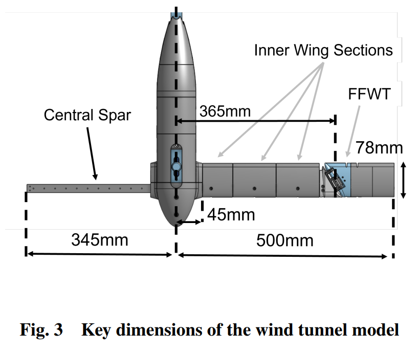
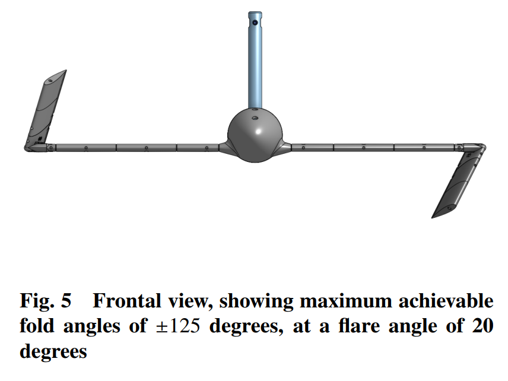
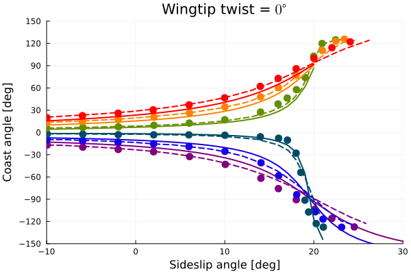
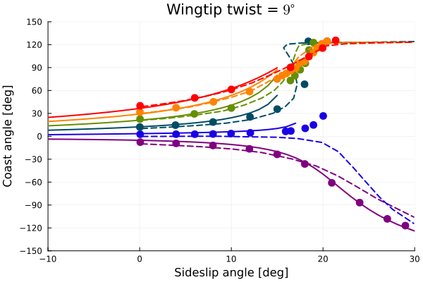
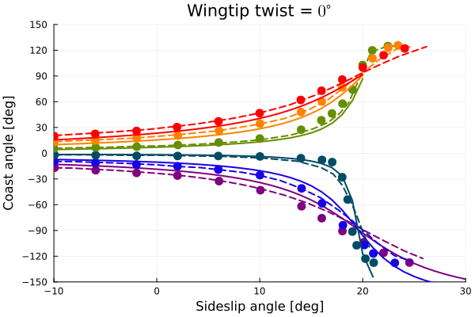
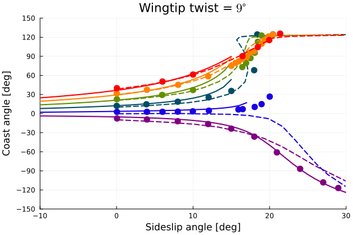

Steady aeroelastic analysis of a wing with flared folding wingtip (FFWT)
This example illustrates how to set up a steady aeroelastic analysis for a wing featuring a flared folding wingtip (FFWT). The influence of the sideslip angle on the behavior of this wing model was studied numerically and experimentally by Healy et al., and more details can be found in Healy's PhD Thesis.

Top view of aircraft model featuring a FFWT by Healy et al.

Front view of aircraft model featuring a FFWT by Healy et al.
The code for this example is available here.
Problem setup
Let's begin by setting the variables of our problem. In this example we will analyze the coasting angle of the FFWT under several combinations of wingtip twist, root pitch angle and sideslip angle, which are defined by the arrays φRange, θRange and βRange, respectively. The flare angle of the wingtip is of 20 degrees, and the airspeed is 22 m/s. A very soft rotational spring is introduced here to avoid the singularity associated with the hinge, through the variable kSpring. We also assume a fixed spanwise lift distribution through the parameter tipLossDecayFactor, in order to model three-dimensional aerodynamic effects.
using AeroBeams, DelimitedFiles
# Wingtip twist angle range
φRange = π/180*[-6,0,9]
# Root pitch angle range
θRange = π/180*vcat(-3:3:12)
# Sideslip angle range
βRange = π/180*vcat(-10:1:30)
# Flare angle [rad]
Λ = 20*π/180
# Airspeed
U = 22
# Spring stiffness
kSpring = 1e-4
# Discretization
nElementsInner = 15
nElementsFFWT = 5
# Tip loss options (the value of tipLossDecayFactor is assumed to match the experimental results, since it strongly influences the solution, especially at lower airspeeds)
withTipCorrection = true
tipLossDecayFactor = 10
# Solution method for constraint
solutionMethod = "addedResidual"
# System solver
σ0 = 1
maxIter = 200
relTol = 1e-6
NR = create_NewtonRaphson(displayStatus=false,initialLoadFactor=σ0,maximumIterations=maxIter,relativeTolerance=relTol)
# Initialize outputs
ϕHinge = Array{Float64}(undef,length(φRange),length(θRange),length(βRange))
problem = Array{SteadyProblem}(undef,length(φRange),length(θRange),length(βRange))Solving the problem
In the following loops, we create new model instances for each combination of wingtip twist, pitch angle and sideslip angle, create and solve the steady problem, and then extract the coasting angle of the FFWT (ϕHinge). The model creation process is streamlined with the function create_HealyFFWT, taking the appropriate inputs. We run the simulations up to the maximum sideslip angle for which convergence is achieved.
# Loop wingtip twist angle
for (i,φ) in enumerate(φRange)
# Loop root pitch angle
for (j,θ) in enumerate(θRange)
# Loop sideslip angle
for (k,β) in enumerate(βRange)
# Update model
model = create_HealyFFWT(solutionMethod=solutionMethod,flareAngle=Λ,kSpring=kSpring,airspeed=U,pitchAngle=θ,wingtipTwist=φ,withTipCorrection=withTipCorrection,tipLossDecayFactor=tipLossDecayFactor,nElementsInner=nElementsInner,nElementsFFWT=nElementsFFWT,flightDirection=[sin(β);cos(β);0])
# Set initial guess solution as the one from previous sideslip angle
x0 = (k>1 && problem[i,j,k-1].systemSolver.convergedFinalSolution) ? problem[i,j,k-1].x : zeros(0)
# Create and solve problem
problem[i,j,k] = create_SteadyProblem(model=model,systemSolver=NR,x0=x0)
solve!(problem[i,j,k])
converged = problem[i,j,k].systemSolver.convergedFinalSolution
# Get outputs, if converged
ϕHinge[i,j,k] = problem[i,j,k].model.hingeAxisConstraints[1].ϕ*180/π
# Skip remaining sideslip angles, if unconverged or if solution for hinge angle has jumped
if !converged || (k > 1 && ϕHinge[i,j,k]*ϕHinge[i,j,k-1] < 0)
ϕHinge[i,j,k:end] .= NaN
break
end
end
end
endPost-processing
The post-processing begins by loading the reference data.
# Load reference data
phim6_aoam3_exp = readdlm(pkgdir(AeroBeams)*"/test/referenceData/HealyFFWTsteadyTwistRangeAoARangeSideslipRangeCoast/phim6_aoam3_exp.txt")
phim6_aoam3_num = readdlm(pkgdir(AeroBeams)*"/test/referenceData/HealyFFWTsteadyTwistRangeAoARangeSideslipRangeCoast/phim6_aoam3_num.txt")
phim6_aoa0_exp = readdlm(pkgdir(AeroBeams)*"/test/referenceData/HealyFFWTsteadyTwistRangeAoARangeSideslipRangeCoast/phim6_aoa0_exp.txt")
phim6_aoa0_num = readdlm(pkgdir(AeroBeams)*"/test/referenceData/HealyFFWTsteadyTwistRangeAoARangeSideslipRangeCoast/phim6_aoa0_num.txt")
phim6_aoa3_exp = readdlm(pkgdir(AeroBeams)*"/test/referenceData/HealyFFWTsteadyTwistRangeAoARangeSideslipRangeCoast/phim6_aoa3_exp.txt")
phim6_aoa3_num = readdlm(pkgdir(AeroBeams)*"/test/referenceData/HealyFFWTsteadyTwistRangeAoARangeSideslipRangeCoast/phim6_aoa3_num.txt")
phim6_aoa6_exp = readdlm(pkgdir(AeroBeams)*"/test/referenceData/HealyFFWTsteadyTwistRangeAoARangeSideslipRangeCoast/phim6_aoa6_exp.txt")
phim6_aoa6_num = readdlm(pkgdir(AeroBeams)*"/test/referenceData/HealyFFWTsteadyTwistRangeAoARangeSideslipRangeCoast/phim6_aoa6_num.txt")
phim6_aoa9_exp = readdlm(pkgdir(AeroBeams)*"/test/referenceData/HealyFFWTsteadyTwistRangeAoARangeSideslipRangeCoast/phim6_aoa9_exp.txt")
phim6_aoa9_num = readdlm(pkgdir(AeroBeams)*"/test/referenceData/HealyFFWTsteadyTwistRangeAoARangeSideslipRangeCoast/phim6_aoa9_num.txt")
phim6_aoa12_exp = readdlm(pkgdir(AeroBeams)*"/test/referenceData/HealyFFWTsteadyTwistRangeAoARangeSideslipRangeCoast/phim6_aoa12_exp.txt")
phim6_aoa12_num = readdlm(pkgdir(AeroBeams)*"/test/referenceData/HealyFFWTsteadyTwistRangeAoARangeSideslipRangeCoast/phim6_aoa12_num.txt")
phi0_aoam3_exp = readdlm(pkgdir(AeroBeams)*"/test/referenceData/HealyFFWTsteadyTwistRangeAoARangeSideslipRangeCoast/phi0_aoam3_exp.txt")
phi0_aoam3_num = readdlm(pkgdir(AeroBeams)*"/test/referenceData/HealyFFWTsteadyTwistRangeAoARangeSideslipRangeCoast/phi0_aoam3_num.txt")
phi0_aoa0_exp = readdlm(pkgdir(AeroBeams)*"/test/referenceData/HealyFFWTsteadyTwistRangeAoARangeSideslipRangeCoast/phi0_aoa0_exp.txt")
phi0_aoa0_num = readdlm(pkgdir(AeroBeams)*"/test/referenceData/HealyFFWTsteadyTwistRangeAoARangeSideslipRangeCoast/phi0_aoa0_num.txt")
phi0_aoa3_exp = readdlm(pkgdir(AeroBeams)*"/test/referenceData/HealyFFWTsteadyTwistRangeAoARangeSideslipRangeCoast/phi0_aoa3_exp.txt")
phi0_aoa3_num = readdlm(pkgdir(AeroBeams)*"/test/referenceData/HealyFFWTsteadyTwistRangeAoARangeSideslipRangeCoast/phi0_aoa3_num.txt")
phi0_aoa6_exp = readdlm(pkgdir(AeroBeams)*"/test/referenceData/HealyFFWTsteadyTwistRangeAoARangeSideslipRangeCoast/phi0_aoa6_exp.txt")
phi0_aoa6_num = readdlm(pkgdir(AeroBeams)*"/test/referenceData/HealyFFWTsteadyTwistRangeAoARangeSideslipRangeCoast/phi0_aoa6_num.txt")
phi0_aoa9_exp = readdlm(pkgdir(AeroBeams)*"/test/referenceData/HealyFFWTsteadyTwistRangeAoARangeSideslipRangeCoast/phi0_aoa9_exp.txt")
phi0_aoa9_num = readdlm(pkgdir(AeroBeams)*"/test/referenceData/HealyFFWTsteadyTwistRangeAoARangeSideslipRangeCoast/phi0_aoa9_num.txt")
phi0_aoa12_exp = readdlm(pkgdir(AeroBeams)*"/test/referenceData/HealyFFWTsteadyTwistRangeAoARangeSideslipRangeCoast/phi0_aoa12_exp.txt")
phi0_aoa12_num = readdlm(pkgdir(AeroBeams)*"/test/referenceData/HealyFFWTsteadyTwistRangeAoARangeSideslipRangeCoast/phi0_aoa12_num.txt")
phi9_aoam3_exp = readdlm(pkgdir(AeroBeams)*"/test/referenceData/HealyFFWTsteadyTwistRangeAoARangeSideslipRangeCoast/phi9_aoam3_exp.txt")
phi9_aoam3_num = readdlm(pkgdir(AeroBeams)*"/test/referenceData/HealyFFWTsteadyTwistRangeAoARangeSideslipRangeCoast/phi9_aoam3_num.txt")
phi9_aoa0_exp = readdlm(pkgdir(AeroBeams)*"/test/referenceData/HealyFFWTsteadyTwistRangeAoARangeSideslipRangeCoast/phi9_aoa0_exp.txt")
phi9_aoa0_num = readdlm(pkgdir(AeroBeams)*"/test/referenceData/HealyFFWTsteadyTwistRangeAoARangeSideslipRangeCoast/phi9_aoa0_num.txt")
phi9_aoa3_exp = readdlm(pkgdir(AeroBeams)*"/test/referenceData/HealyFFWTsteadyTwistRangeAoARangeSideslipRangeCoast/phi9_aoa3_exp.txt")
phi9_aoa3_num = readdlm(pkgdir(AeroBeams)*"/test/referenceData/HealyFFWTsteadyTwistRangeAoARangeSideslipRangeCoast/phi9_aoa3_num.txt")
phi9_aoa6_exp = readdlm(pkgdir(AeroBeams)*"/test/referenceData/HealyFFWTsteadyTwistRangeAoARangeSideslipRangeCoast/phi9_aoa6_exp.txt")
phi9_aoa6_num = readdlm(pkgdir(AeroBeams)*"/test/referenceData/HealyFFWTsteadyTwistRangeAoARangeSideslipRangeCoast/phi9_aoa6_num.txt")
phi9_aoa9_exp = readdlm(pkgdir(AeroBeams)*"/test/referenceData/HealyFFWTsteadyTwistRangeAoARangeSideslipRangeCoast/phi9_aoa9_exp.txt")
phi9_aoa9_num = readdlm(pkgdir(AeroBeams)*"/test/referenceData/HealyFFWTsteadyTwistRangeAoARangeSideslipRangeCoast/phi9_aoa9_num.txt")
phi9_aoa12_exp = readdlm(pkgdir(AeroBeams)*"/test/referenceData/HealyFFWTsteadyTwistRangeAoARangeSideslipRangeCoast/phi9_aoa12_exp.txt")
phi9_aoa12_num = readdlm(pkgdir(AeroBeams)*"/test/referenceData/HealyFFWTsteadyTwistRangeAoARangeSideslipRangeCoast/phi9_aoa12_num.txt")We can now plot the coasting angle of the FFWT as a function of sideslip angle for each of the root pitch and wingtip twist angles. The following reference results (both numerical and experimental) were taken from Fig. 7.34 of Healy's PhD Thesis. Healy's numerical method is composed of a Rayleigh-Ritz structural model coupled to a VLM for aerodynamics, with the flared folding wingtip being modeled as a point inertia connected to the inner wing via a hinge. For the most part, the correlation of AeroBeams' results with the reference data is good, especially for the case of zero wingtip twist. This twist profile is very agressively introduced at the very tip of the wing, and similar convergence problems for these cases were also reported by Jan et al. with ASWING. Also note that the wingtip is limited to a fold angle of $\pm125^\degree$, a detail that is not implemented yet in AeroBeams.
using Plots, ColorSchemes
gr()
colors = cgrad(:rainbow, length(θRange), categorical=true)
lw = 2
ms = 6
msw = 0
figureNames = ["HealyFFWTsteadySideslipRangeAoARangeCoast_phim6.svg" "HealyFFWTsteadySideslipRangeAoARangeCoast_phi0.svg" "HealyFFWTsteadySideslipRangeAoARangeCoast_phi9.svg"]
# Coast angle vs sideslip angle for each AoA, for several wingtip twist angles
for (i,φ) in enumerate(φRange)
if i==1
aoam3_exp = phim6_aoam3_exp
aoam3_num = phim6_aoam3_num
aoa0_exp = phim6_aoa0_exp
aoa0_num = phim6_aoa0_num
aoa3_exp = phim6_aoa3_exp
aoa3_num = phim6_aoa3_num
aoa6_exp = phim6_aoa6_exp
aoa6_num = phim6_aoa6_num
aoa9_exp = phim6_aoa9_exp
aoa9_num = phim6_aoa9_num
aoa12_exp = phim6_aoa12_exp
aoa12_num = phim6_aoa12_num
elseif i==2
aoam3_exp = phi0_aoam3_exp
aoam3_num = phi0_aoam3_num
aoa0_exp = phi0_aoa0_exp
aoa0_num = phi0_aoa0_num
aoa3_exp = phi0_aoa3_exp
aoa3_num = phi0_aoa3_num
aoa6_exp = phi0_aoa6_exp
aoa6_num = phi0_aoa6_num
aoa9_exp = phi0_aoa9_exp
aoa9_num = phi0_aoa9_num
aoa12_exp = phi0_aoa12_exp
aoa12_num = phi0_aoa12_num
else
aoam3_exp = phi9_aoam3_exp
aoam3_num = phi9_aoam3_num
aoa0_exp = phi9_aoa0_exp
aoa0_num = phi9_aoa0_num
aoa3_exp = phi9_aoa3_exp
aoa3_num = phi9_aoa3_num
aoa6_exp = phi9_aoa6_exp
aoa6_num = phi9_aoa6_num
aoa9_exp = phi9_aoa9_exp
aoa9_num = phi9_aoa9_num
aoa12_exp = phi9_aoa12_exp
aoa12_num = phi9_aoa12_num
end
plt = plot(xlabel="Sideslip angle [deg]", ylabel="Coast angle [deg]", title="Wingtip twist = \$ $(round(Int,φ*180/π)) \\degree\$", xlims=[-10,30], ylims=[-150,150], yticks=-150:30:150)
if i==1
plot!(legendfontsize=7, legend=:topleft)
else
plot!(legend=false)
end
scatter!([NaN],[NaN], mc=:black, ms=ms, msw=msw, label="Healy (2023) - Exp.")
plot!([NaN],[NaN], lc=:black, ls=:dash, lw=lw, label="Healy (2023) - Num.")
plot!([NaN],[NaN], lc=:black, ls=:solid, lw=lw, label="AeroBeams")
for (j,θ) in enumerate(θRange)
plot!(βRange*180/π, -ϕHinge[i,j,:], lw=lw, ls=:solid, c=colors[j], label="\$\\theta = $(round(Int,θ*180/π)) \\degree\$")
if j==1
plot!(aoam3_num[1,:], aoam3_num[2,:], lw=lw, ls=:dash, c=colors[j], label=false)
scatter!(aoam3_exp[1,:], aoam3_exp[2,:], ms=ms, msw=msw, c=colors[j], label=false)
elseif j==2
plot!(aoa0_num[1,:], aoa0_num[2,:], lw=lw, ls=:dash, c=colors[j], label=false)
scatter!(aoa0_exp[1,:], aoa0_exp[2,:], ms=ms, msw=msw, c=colors[j], label=false)
elseif j==3
plot!(aoa3_num[1,:], aoa3_num[2,:], lw=lw, ls=:dash, c=colors[j], label=false)
scatter!(aoa3_exp[1,:], aoa3_exp[2,:], ms=ms, msw=msw, c=colors[j], label=false)
elseif j==4
plot!(aoa6_num[1,:], aoa6_num[2,:], lw=lw, ls=:dash, c=colors[j], label=false)
scatter!(aoa6_exp[1,:], aoa6_exp[2,:], ms=ms, msw=msw, c=colors[j], label=false)
elseif j==5
plot!(aoa9_num[1,:], aoa9_num[2,:], lw=lw, ls=:dash, c=colors[j], label=false)
scatter!(aoa9_exp[1,:], aoa9_exp[2,:], ms=ms, msw=msw, c=colors[j], label=false)
else
plot!(aoa12_num[1,:], aoa12_num[2,:], lw=lw, ls=:dash, c=colors[j], label=false)
scatter!(aoa12_exp[1,:], aoa12_exp[2,:], ms=ms, msw=msw, c=colors[j], label=false)
end
end
end  
 
This page was generated using Literate.jl.